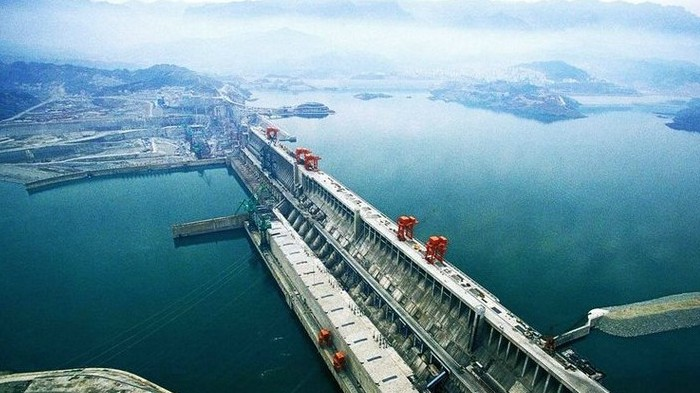
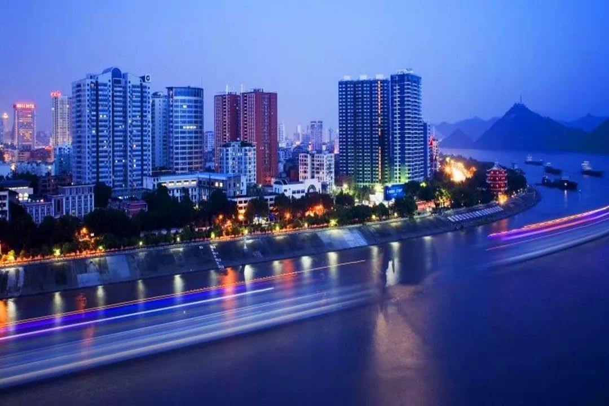

家乡文化

我的老家在湖北宜昌，而在宜昌最为著名的就是三峡大坝了，三峡水电站是目前世界上规模最大的水电站和清洁能源基地，也是目前中国有史以来建设最大型的工程项目。

与此同时，宜昌也是中国优秀旅游城市。境内有4处国家5A级旅游景区，数量居全国城市第四。宜昌是湖北省唯一国家环境保护模范城市 ，同时享有全国文明城市、国家园林城市 、国家卫生城市、国家森林城市 、中国钢琴之城等美誉。
最后，位于宜昌市内清江画廊也是不容错过的美景，清江画廊风景区地处于湖北省宜昌市的长阳土家族自治县境内，涵盖隔河岩水电站大坝以上至湖北省宜昌市长阳土家族自治县渔峡口镇盐池温泉，沿清江一线的所有旅游景观及景区景点。重点打造了清江古城、倒影峡、仙人寨、武落钟离山等景点。